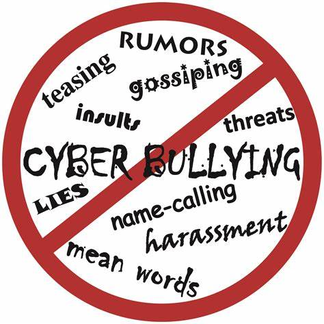
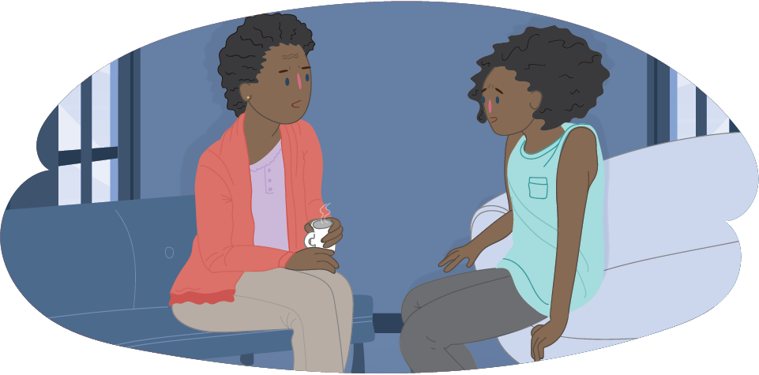

Cyber Bullying

What is cyberbullying?
‘The use of electronic communication to bully a person, typically by sending messages of an intimidating or threatening nature.’
Cyberbullying is a form of bullying or harassment using electronic devices. Cyberbullying is also known as online bullying. It can occur through text, calls, social media, gaming, etc. It has become very common among teenagers as technology continues to improve day by day.

Differences of Bullying and Cyberbullying:
Cyberbullying is a type of bullying but it can be harder to deal with. This type of bullying occurs digitally which means it has a high chance of spreading throughout the internet. It would have a long-lasting effect that would affect the person’s wellbeing. An example of this could be social media posts. They can be quickly shared through the internet, stored secretly in certain locations and even be left as a permanent record.

Ways to avoid Cyberbullying:
There are multiple ways to avoid cyberbullying online:
Never post your personal information online - This can include your phone number, email address, password, school name, etc. This information could be used against you which could result in cyberbullying.
Ignore messages from unfamiliar people - if you get a message from someone you don’t know, do not open it and delete it immediately. The message could be a form of cyberbullying or sometimes even a virus. It is best to delete the message if you are unsure.
Proofreading - Make sure to proofread your messages before sending them. People could interpret things differently; make your messages easy to read and understand. If a person does take it the wrong way, apologise and explain later to avoid cyberbullying.
Effects of cyberbullying:
Cyberbullying can have 4 major effects on a person. Emotional, Mental, Physical and Behavioural. Emotional effects could result in Humiliation, Isolation, Anger, etc. This can change a person’s emotional state and give them low self-confidence. Mental effects can give a person depression, social anxiety and low self-esteem. These changes can also result in low self-confidence which can create stress and loneliness. Physical effects from cyberbullying can affect sleep and eating habits. This would be unhealthy for the body which can result in not getting enough sleep and starvation. Lastly, Behavioural effects could be skipping school, using drugs or even carrying a weapon. This is because the person would be scared of their personal space so they will become more cautious of their surroundings. Cyberbullying overall can have negative effects on a person which in the worst-case scenario, can lead to suicide.

How to take action against cyberbullying:
As mentioned before, cyberbullying can have a lot of effects on a purpose which can also affect their wellbeing. It should be avoided especially by young students. Here are a few ways of how to take action against cyberbullying:
Talk to someone you trust - Talking to someone you trust can help you open up about cyberbullying. They can help you by giving tips on how to avoid cyberbullying and if it is urgent, they can report to the police or emergency services in your area. If you are having trouble with talking to someone, consider talking to a professional counsellor or a therapist. This would be helpful for you to open up to someone trustworthy and they can even report your case.
Reporting - If you’re being cyberbullied to a far extent, it is important to report it. Reporting a cyberbullying case to the police or emergency services can help track down the bullies which would make you feel more safe and comfortable around others.
Back to top of page
Credits:
Made for: Health Assessment
Information by: Saheb
Coded by: Eden
Coded on: Visual Studio Code
Code Laguage: HTML
Uploaded with: Github